ประตูอัตโนมัติ การเดินเครื่อง
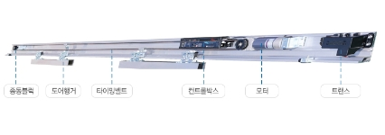
อุปกรณ์ซ่อนภายใน WS-T
มอเตอร์ควบคุมดิจิตอล 90W DC
MICROPROCESSOR CONTROLLED AUTOMATIC DOOR ซีรีส์ WS-T
นั้นมีเครื่องที่มีระบบทางวิศวกรรมของมนุษย์และมีระบบ AI
ที่มีประสิทธิภาพสูงสุดในประจุบันตาม INTELLIGENT OPERATOR
ที่เรียกว่าประตูอัตโนมัติ WECO
นั้นมีเครื่องที่มีระบบทางวิศวกรรมของมนุษย์และมีระบบ AI
ที่มีประสิทธิภาพสูงสุดในประจุบันตาม INTELLIGENT OPERATOR
ที่เรียกว่าประตูอัตโนมัติ WECO
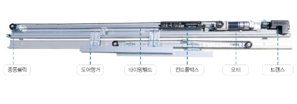
เปิดแบบสไลด์สองชั้น
มอเตอร์ควบคุมดิจิตอล 90W DC เปิดแบบสไลด์สองชั้น
MICROPROCESSOR CONTROLLED AUTOMATIC DOOR ซีรีส์ WS-T
นั้นมีเครื่องที่มีระบบทางวิศวกรรมของมนุษย์และมีระบบ AI
ที่มีประสิทธิภาพสูงสุดในประจุบันตาม INTELLIGENT OPERATOR
ที่เรียกว่าประตูอัตโนมัติ WECO
นั้นมีเครื่องที่มีระบบทางวิศวกรรมของมนุษย์และมีระบบ AI
ที่มีประสิทธิภาพสูงสุดในประจุบันตาม INTELLIGENT OPERATOR
ที่เรียกว่าประตูอัตโนมัติ WECO
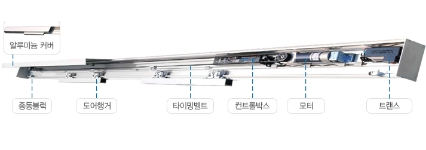
รวมฝาครอบโดยตรงในหนึ่งตัว WS-TC
มอเตอร์ควบคุมดิจิตอล 90W DC รวมฝาครอบโดยตรงในหนึ่งตัว
MICROPROCESSOR CONTROLLED AUTOMATIC DOOR ซีรีส์ WS-T
นั้นมีเครื่องที่มีระบบทางวิศวกรรมของมนุษย์และมีระบบ AI
ที่มีประสิทธิภาพสูงสุดในประจุบันตาม INTELLIGENT OPERATOR
ที่เรียกว่าประตูอัตโนมัติ WECO
นั้นมีเครื่องที่มีระบบทางวิศวกรรมของมนุษย์และมีระบบ AI
ที่มีประสิทธิภาพสูงสุดในประจุบันตาม INTELLIGENT OPERATOR
ที่เรียกว่าประตูอัตโนมัติ WECO
ประตูอัตโนมัติ ระบบ
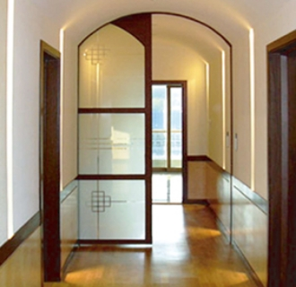
ประตูอัตโนมัติ ประตูอัตโนมัติ
เหมาะสมและสะดวกสบายสำหรับล็อบบี้ที่อยู่ชั้นสูงกับร้านค้าทั่วไป
ประตูเปิดด้านเดียว - WS-T200(S)
ประตูเปิดสองด้าน - WS-T400(D)
ประตูเปิดสองด้าน - WS-T400(D)
ประตูที่มีขนาดกล้างสำหรับ ห้องรับรอง 5ดาว, โชว์รูมรถยนต์
มีการประเมินคุณภาพที่ดีในการที่มีความลาบลื่นและไม่มีเสียงดังเวลาเปิด
มีการประเมินคุณภาพที่ดีในการที่มีความลาบลื่นและไม่มีเสียงดังเวลาเปิด
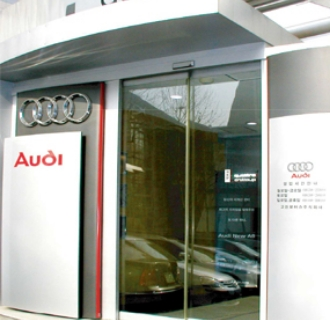
อุปกรณ์ซ่อนภายใน ประตูอัตโนมัติ
แบบระบบภายในตัวที่ไม่ทำให้วิวเสียหาย
ประตูเปิดด้านเดียว - WS-T200(S)
ประตูเปิดสองด้าน - WS-T400(D)
ประตูเปิดสองด้าน - WS-T400(D)
ความสามารถเพียบพร้อมไม่ว่าจะ
เป็นประตูแคบไปถึงประตูกว้างและประตูที่เบาไปจนถึงประตูที่มีน้ำหนักหนัก
ความสมบูรณ์แบบโดยไม่มีข้อบกพร่องที่ได้รับการประเมินที่ดีกับ
ทางเข้าออกที่มีคนเข้าออกเยอะ
เป็นประตูแคบไปถึงประตูกว้างและประตูที่เบาไปจนถึงประตูที่มีน้ำหนักหนัก
ความสมบูรณ์แบบโดยไม่มีข้อบกพร่องที่ได้รับการประเมินที่ดีกับ
ทางเข้าออกที่มีคนเข้าออกเยอะ
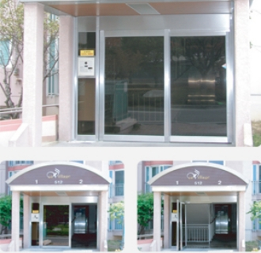
แพนิค ประตูอัตโนมัติ
นเวลาฉุกเฉินสามารถเปิดsliding-swing out ได้ทำให้เปิดได้มากกว่าปกติ 2เท่า
ประตูเปิดด้านเดียว - WS-TP200
ประตูเปิดสองด้าน - WS-TP400
ประตูเปิดสองด้าน - WS-TP400
ประตูอเนกประสงค์สามารถรับรองได้ตั้วแต่ประ
ตูที่แคบและกว้างรวมถึงประตูเบาและหนัก
ได้รับการประเมินคุณภาพที่ดีและปลอดภัยสำหรับก
ารรับรองลูกค้าสำหรับสถานที่ที่มีคนเข้าออกเยอะ
ตูที่แคบและกว้างรวมถึงประตูเบาและหนัก
ได้รับการประเมินคุณภาพที่ดีและปลอดภัยสำหรับก
ารรับรองลูกค้าสำหรับสถานที่ที่มีคนเข้าออกเยอะ
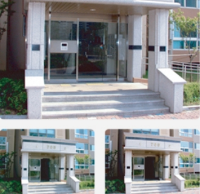
ประตู 3 บาน ประตูอัตโนมัติ
ประตูที่มีรสนิยมมีความสะดวกสบายและปลอดภัยเหมาะสำหรับประตูทางเข้า
ประตูเปิดด้านเดียว - WS-T200(S)
ประตูเปิดสองด้าน - WS-T400(D)
ประตูเปิดสองด้าน - WS-T400(D)
เหมาะสำหรับประตูทางเข้าที่ต้องการความสวยงามและมีก
ารลดพลังงานไฟฟ้ารวมถึงความปลอดภัยและความสะดวกสบาย
อย่างเช่นประตูกลางของอพาร์ทเมนต์
ารลดพลังงานไฟฟ้ารวมถึงความปลอดภัยและความสะดวกสบาย
อย่างเช่นประตูกลางของอพาร์ทเมนต์
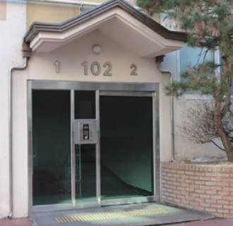
แบบเพดาน ประตูอัตโนมัติ
สามารถใข้งานได้แบบกว้างแม้จะมีความสูงไม่มาก
ประตูเปิดด้านเดียว - WS-T200(S)
ประตูเปิดสองด้าน - WS-T400(D)
ประตูเปิดสองด้าน - WS-T400(D)
ประตูที่ต้องติดตั้งแต่ไม่มีความสูงพอสามารถติดตั้งป
ระตูอัตโนมิติที่ลดกรอบที่มีระดับสูง 115mm ได้
ระตูอัตโนมิติที่ลดกรอบที่มีระดับสูง 115mm ได้

ประตูที่ไม่มีความสมดุลย์ ประตูอัตโนมัติ
เหมาะสมกับประตูทางเข้าออกอัตโนมัติที่มีขนาดไม่สมดุลย์ที่ข้างหนึ่งอาจจะเบี้ยว
ประตูเปิดสองด้าน - WS-UD400
เป็นประตูอัตโนมัติที่มีการออกแบบมากอย่างสวย
งามมากกว่าประตูอัตโนมัติปกติที่สามารถนำไปใช้ตกแต่
งภายในและยังมีความสะดวกสบายอีกด้วย
งามมากกว่าประตูอัตโนมัติปกติที่สามารถนำไปใช้ตกแต่
งภายในและยังมีความสะดวกสบายอีกด้วย
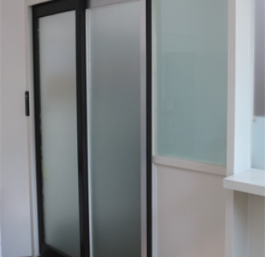
อลูมิเนียม ประตูอัตโนมัติ
มีน้ำหนักเบาและสามารถต้านลมได้ทำให้สามารถลดการใช้พลังงานได้และยังสามารถติดตั้งได้ง่ายอีกด้วย
ประตูเปิดด้านเดียว - WS-TC200(S)
ประตูเปิดสองด้าน - WS-TC400(D)
ประตูเปิดสองด้าน - WS-TC400(D)
จัดส่งได้ง่ายและติดตั้งง่ายมีสีให้เลือกมากมายแล้
วแต่การตกแต่งและยังสามารถต้านลมได้ช่วยในกา
รลดพลังงานในการเปิดปิดประตู
วแต่การตกแต่งและยังสามารถต้านลมได้ช่วยในกา
รลดพลังงานในการเปิดปิดประตู
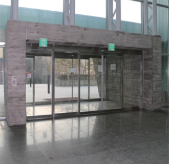
แบบคานที่มีขนาด 100 ประตูอัตโนมัติ
เหมาะกับการเปลี่ยนจากประตูที่ต้องเปิดปิดมาเป็นประตูอัตโนมัติให้ดูดีขึ้น
ประตูเปิดด้านเดียว - WS-T200(S)
ประตูเปิดสองด้าน - WS-T400(D)
ประตูเปิดสองด้าน - WS-T400(D)
เหมาะสำหรับการติดตั้งเปลี่ยนจากประตู
เปิดปิดปกติที่เป็นสถานที่ที่ติดตั้งลำบากมีพื้นที่น้อย
ช่วยทำให้ดูดีขึ้นโดยใช้คานที่มีขนาด 100mm
ที่มีขนาดเท่ากับประตูเปิดปิดธรรมดา
เปิดปิดปกติที่เป็นสถานที่ที่ติดตั้งลำบากมีพื้นที่น้อย
ช่วยทำให้ดูดีขึ้นโดยใช้คานที่มีขนาด 100mm
ที่มีขนาดเท่ากับประตูเปิดปิดธรรมดา
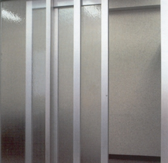
เลื่อนเปิดพร้อมกัน 2 บาน ประตูอัตโนมัติ
เหมาะสำหรับพื้นที่ที่แคบไม่มีพื้นที่ที่จะเลื่อนเปิดประตูได้
ประตูเปิดด้านเดียว - WS-TS200(S)
ประตูเปิดสองด้าน - WS-TS400(D)
ประตูเปิดสองด้าน - WS-TS400(D)
สามารถเปิดประตูที่ซ้อนกันอยู่ 2 บานไปในทางเดียวกัน
เป็นการรวมระบบของกระจก 2 บานให้เลื่อนเปิดปิดพร้อมกันได้
สามารถใช้พื้นที่ของประตูได้มากขึ้น
เหมาะสำหรับสถานที่ที่ใช้ในการเก็บของหรือที่ต้อง
เคลื่อนย้ายเตียงนอนอย่างเช่นโรงพยาบาล
เป็นการรวมระบบของกระจก 2 บานให้เลื่อนเปิดปิดพร้อมกันได้
สามารถใช้พื้นที่ของประตูได้มากขึ้น
เหมาะสำหรับสถานที่ที่ใช้ในการเก็บของหรือที่ต้อง
เคลื่อนย้ายเตียงนอนอย่างเช่นโรงพยาบาล
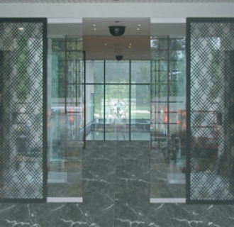
ประตูสำหรับอุตสาหกรรม ประตูอัตโนมัติ
การเปิดปิดประตูที่มีความลาบลื่นเหมาะกับประตูของโรงงานต่างๆ
ประตูเปิดด้านเดียว - WS-T300(S)
ประตูเปิดสองด้าน - WS-T600(D)
ประตูเปิดสองด้าน - WS-T600(D)
สามารถเคลื่อนที่สิ่งของที่ต้องออกส่งได้อย่างมีประสิทธิภ
าพช่วยทำให้มีความลาบลื่นมากขึ้นในการทำงานรวมถึงกา
รลดใช้พลังงาน สามารถเลือกใช้ประตูที่อาจจะเป็นประตูของ
โรงงานหรือคลังสิ่งของหรืออาจจะเป็นโรงเก็บของแช่แข็ง
าพช่วยทำให้มีความลาบลื่นมากขึ้นในการทำงานรวมถึงกา
รลดใช้พลังงาน สามารถเลือกใช้ประตูที่อาจจะเป็นประตูของ
โรงงานหรือคลังสิ่งของหรืออาจจะเป็นโรงเก็บของแช่แข็ง
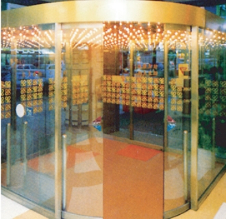
ประตูทรงกลม ประตูอัตโนมัติ
ประตูทรงกลมที่ทำให้ทางเข้าดูสง่างาม
ประตูเปิดด้านเดียว - WS-R180(1/2)
ประตูเปิดสองด้าน - WS-R360
ประตูเปิดสองด้าน - WS-R360
ประตูทรงกลมนั้นนิยมใช้สำหรับประตูที่มีขนาดใหญ่
สามารถทำให้ดูมีความสง่างามเหมาะกับ
โรงแรม/ห้างสรรพสินค้า/ตึกชั้นสูง เป็นต้น
สามารถเลือกติดตั้งได้ตามพื้นที่ที่มีอยู่มีเกณฑ์มาตรฐานอยู่คือ 1500R
แต่สามารถเลือกปรับขนาดได้โดยมีขนาดเล็กกว่า มาตรฐาน 1/4
และยังช่วยในเรื่องของการลดพลังงานของเครื่องปรับอ
ากาศที่ประตูทรงกลมอัตโนมัตินี้มีประสิทธิภาพในตัวของมันอยู่แล้ว
สามารถทำให้ดูมีความสง่างามเหมาะกับ
โรงแรม/ห้างสรรพสินค้า/ตึกชั้นสูง เป็นต้น
สามารถเลือกติดตั้งได้ตามพื้นที่ที่มีอยู่มีเกณฑ์มาตรฐานอยู่คือ 1500R
แต่สามารถเลือกปรับขนาดได้โดยมีขนาดเล็กกว่า มาตรฐาน 1/4
และยังช่วยในเรื่องของการลดพลังงานของเครื่องปรับอ
ากาศที่ประตูทรงกลมอัตโนมัตินี้มีประสิทธิภาพในตัวของมันอยู่แล้ว
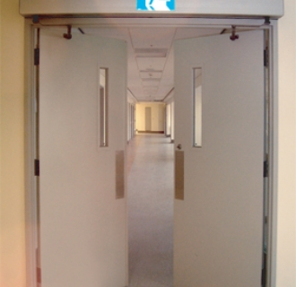
แบบสวิง ประตูอัตโนมัติ
เหมาะสำหรับพื้นที่ที่เล็กแล้วสามารถช่วยลดพลังงานได้
ประตูเปิดด้านเดียว - WS-S100
ประตูเปิดสองด้าน - WS-S200
ประตูเปิดสองด้าน - WS-S200
ประตูอัตโนมัติหรือประตูเปิดด้วยมือแบบสวิ
งเหมาะกับการใช้เพื่อไม่ให้สิ่งของต่างๆอยู่แถวประตู
สามารถเปลี่ยนพื้นที่ที่มีขนาดเล็กให้เป็นแบบใหม่ได้และยังช่
วยลดพลังงานช่วยเหลือในการทำงานได้อย่างมีประสิทธิภาพ
งเหมาะกับการใช้เพื่อไม่ให้สิ่งของต่างๆอยู่แถวประตู
สามารถเปลี่ยนพื้นที่ที่มีขนาดเล็กให้เป็นแบบใหม่ได้และยังช่
วยลดพลังงานช่วยเหลือในการทำงานได้อย่างมีประสิทธิภาพ
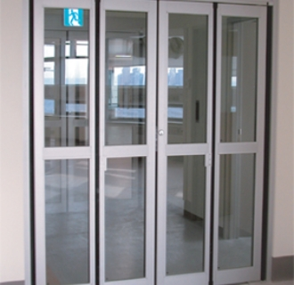
ประตูเลื่อนเปิดแบบพับ ประตูอัตโนมัติ
เหมาะกับประตูที่ไม่มีพื้นที่ซ้อนประตูทำให้ดูสะอาดเรียบร้อย
ประตูเปิดด้านเดียว - WS-V100
ประตูเปิดสองด้าน - WS-V200
ประตูเปิดสองด้าน - WS-V200
ไม่ต้องใช้พื้นที่เยอะเก็บพับได้อย่างเรียบร้อยทำให้ไม่ดีเกะกะ
แบบอัตโนมัตินั้นช่วยเปิดปิดได้อย่างเสถียรภาพเหมาะกับโร
งพยาบาล ห้องผ่าตัด/ทางเดิน/ห้องน้ำ
และการออกแบบที่แปลกใหม่ของเราโดยใช้การพับอลูมิเนียมท
ำให้ดูเป็นประตูที่มีคุณภาพรวมถึงการติดตั้ง PIVOT
ที่พื้นสามารถติดตั้งโดยการปรับขนาดได้ตามทาง X-Y ด้านละ±3mm
แบบอัตโนมัตินั้นช่วยเปิดปิดได้อย่างเสถียรภาพเหมาะกับโร
งพยาบาล ห้องผ่าตัด/ทางเดิน/ห้องน้ำ
และการออกแบบที่แปลกใหม่ของเราโดยใช้การพับอลูมิเนียมท
ำให้ดูเป็นประตูที่มีคุณภาพรวมถึงการติดตั้ง PIVOT
ที่พื้นสามารถติดตั้งโดยการปรับขนาดได้ตามทาง X-Y ด้านละ±3mm
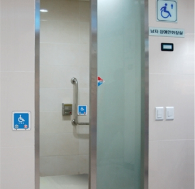
ประตูสำหรับคนพิการ ประตูอัตโนมัติ
ประตูที่ช่วยเหลือผู้พิการให้สะดวกสบายขึ้น
ประตูเปิดด้านเดียว - WS-HD200
ประตูเปิดสองด้าน - WS-HD400
ประตูเปิดสองด้าน - WS-HD400
มีความกว้างสามารถเข้าออกได้ง่าย
ออกแบบขึ้นมาเพื่อผู้พิการโดยเฉพาะมีความปลอดภัยสูง
ออกแบบขึ้นมาเพื่อผู้พิการโดยเฉพาะมีความปลอดภัยสูง
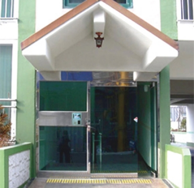
ประตูดูแลการเข้าออก ระบบ
ในปัจจุบันการรักษาระบบความภัยของการเข้าออกนั้นจำเป็นมากขึ้น
ประตูเปิดด้านเดียว - WS-TP200
ประตูเปิดสองด้าน - WS-TP400
ประตูเปิดสองด้าน - WS-TP400
การพัฒนาของสังคมมีการเติบโตของด้านอุตสาหกรรมมากขึ้
นทำให้มีการรักษาข้อมูลหรือสิ่งต่างๆกันมาก
ในปัจจุบันจึงได้มีการห้ามเข้าออกโดยระบบและเป็นสิ่งจำเป็นในปัจจุบัน
นทำให้มีการรักษาข้อมูลหรือสิ่งต่างๆกันมาก
ในปัจจุบันจึงได้มีการห้ามเข้าออกโดยระบบและเป็นสิ่งจำเป็นในปัจจุบัน
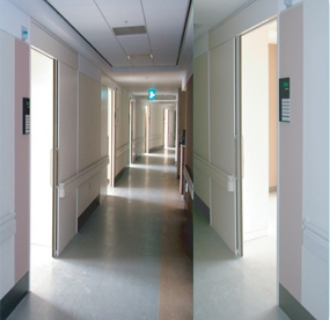
ประตูกึ่งอัตโนมัติ
สามารถใช้พื้นที่และเปิดประตูได้โดยไม่ต้องใช้แรงกำลังเยอะ
ประตูเปิดด้านเดียว - WS-TP200
ประตูเปิดสองด้าน - WS-TP400
ประตูเปิดสองด้าน - WS-TP400
แอร์ไซลินเดอร์กระบอกกลมที่ทำขึ้นมาพิเ
ศษทำให้เลื่อนประตูได้โดยไม่ใช้แรงเยอะและไม่มีเสียงอีกด้วย
เหมาะกับสถานที่ที่ต้องเงียบสงบ
ศษทำให้เลื่อนประตูได้โดยไม่ใช้แรงเยอะและไม่มีเสียงอีกด้วย
เหมาะกับสถานที่ที่ต้องเงียบสงบ